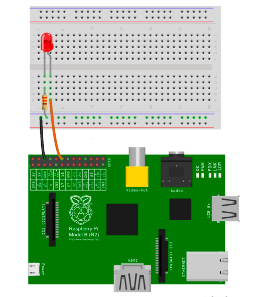

Step 1
Design Script

- Design a script file that toggles an LED on & off when you clap. This will enable you to test the implementation of the sound sensor.
- Use the MCP3008 library as a reference to design the script file ("clapper.py").
- Example of ur clapper script file:
>> Read values from "simpleTest.py"
>> When envelope value > threshold value (1000)
>> turn the LED on
>> Next time it reads values of envelope
>> turn the LED off
Step 2
Wiring the LED Circuit
Circuits Parts Needed: A Breadboard, An LED, A 330 ohm resistor
The circuit consists of a power supply (the Rasberry Pi), an LED that lights up when power is supplied, and a resistor to limit the current flow through the circuit.
Step 3
Main.py
- After integrating all the sensors to the Rasberry Pi, design a "main.py" script the illustrates all the outputed values.
- The figure above shows the final graph of the values.